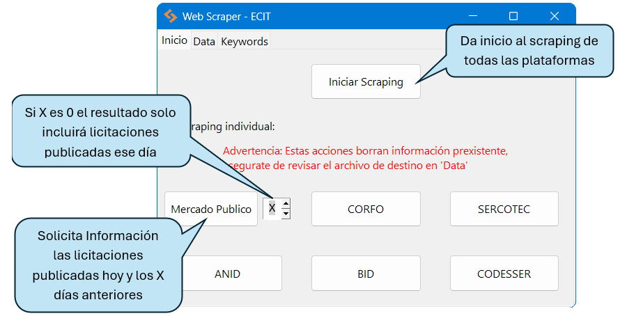

Tools & Systems
ECIT Practicum Practica ECIT
Projects developed during my 2026 summer practicum at ECIT. Proyectos desarrollados durante mi practica de verano 2026 en ECIT.
Python
HTML
JavaScript
WordPress
Web Scraper
Download & Instalation Descarga e Instalación
Select the last available versión, run and follow the instructions of the installer.(By default the programm gets installed in your Documents) Selecciona la ultima version disponible, ejecuta y sigue las instrucciones del instalador.
(Por defecto el programa se instala en Documentos) what changed in the last version? ¿Que cambio en la ultima version?
Home Inicio
Here you instruct the programm to start scraping, every scraping process generates an excel file with the results (see Data).Each time a scraping is done, either general or individual it overwrites the Excel file. Aquí se da la instrucción al programa de realizar scraping, todo proceso de scraping genera un archivo Excel con los resultados (ver Data).
Cada vez que se realiza un scraping ya sea general o individual se sobrescribe el archivo Excel. 
With the default configuration a general scraping takes on average 12 minutes
Platform Overview:
Con La configuración por defecto un scraping general toma aproximadamente 12 minutos
Desglose por plataforma:
- Mercado Publico: 13 seconds
- BID: 9 seconds
- ANID: 3 seconds
- SERCOTEC: 9 minutos 8 seconds
- CORFO: 48 seconds
- CODESSER: 50 seconds
- Mercado Publico: 13 segundos
- BID: 9 segundos
- ANID: 3 segundos
- SERCOTEC: 9 minutos 8 segundos
- CORFO: 48 segundos
- CODESSER: 50 segundos
Data
Within Data you can edit the name of the output file where the scraping results are stored, this path is relative to where the programm is installed, if it doesn't exist it will be created. If you want your files in a diferent folder this folder needs to exist before you run the scraping.En Data puede editar el nombre del archivo en donde se guardarán los resultados, este archivo se escribe de manera relativa a donde está el instalado el programa, si el archivo no existe se creará. Si desea que sus archivos se guarden en una carpeta por separado la carpeta debe existir antes de iniciar un proceso de scraping.
E.g.1:

Web Scraper 0.1.5/
├─ _internal/
├─ config.json
├─ Scraping.xlsx*
├─ unins000.dat
├─ unins000.exe
└─ Web Scraper.exe
E.g.2:

Web Scraper 0.1.5/
└─ data/ <-- No existedata/ <-- Doesn't exists
└─ Scraping.xlsx*
├─ _internal/
├─ config.json
├─ unins000.dat
├─ unins000.exe
└─ Web Scraper.exe
Keywords

Here is where you filter the results, add keywords for inclusion and exclusion, one per line. Also here you need to add your Mercado Publico API Ticket.
Aquí se añade la información para filtrar los resultados, tanto las keywords como las palabras de exclusión deben estar separadas, dejando una por línea. Tambien el ticket de Mercado Publico para acceso a su API
HTML Generator Generadores de HTML
├─ Básicos.txt
├─ Avanzados.txt
├─ Form.html
├─ generate_form_html.py
├─ generate_list_html.py
├─ List.html
└─ Módulos
Each .txt File creates a section of modules, if you want to add or remove a .txt you'll need to modify this line of code in generate_form_html.py
Cada Archivo .txt crea una sección de módulos, si se quiere agregar o quitar un .txt se debe modificar esta línea de generate_form_html.py

The programm reads every line and looks for the following structure:
El programa lee cada línea de cada txt y busca la siguiente estructura:

Any line that starts by a letter generates a module and any line after that starting with “•” generates an item in the details list.
Módulos.txt has the title of every module, one per line.
It's important for it to work that the title in form.html and list.html of each module is exactly the same so that the selected list works correctly.
Ósea toda línea que empiece por alguna letra genera un módulo y toma esa línea como título y toda línea que empiece por “•” genera un ítem en la lista del desglose.
Módulos.txt incluye los títulos de los módulos, uno por línea.
Es importante para la funcionalidad que el título de form.html y list.html de cada uno debe ser exactamente igual para que la lista de selccionados funcione correctamente.

Finally you need to copy the contents of each .html in the corresponding section of the WordPress page.
Finalmente se debe copiar el contenido de cada archivo .html en la sección correspondiente de la página en WordPress.